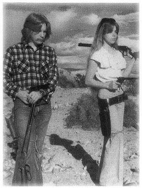

Chapter 18
Messengers of God
'It is possible that Commodore Hubbard and his wife . . . are philanthropists of some kind and/or eccentrics, but if one does not accept this as an explanation, there has to be some other gimmick involved in this operation. What this gimmick might be is unknown here, although people in Casablanca have speculated variously from smuggling to drug traffic to a far-out religious cult.' (Cable from US Consul General, Casablanca, to Washington, 26 September 1969)
 (Scientology's account of the years 1968-69.)
(Scientology's account of the years 1968-69.)
(Scientology's account of the years 1969-72.)
At the time of her ignominious departure from Corfu, the Apollo informed the port authorities that she would be making for Venice, information which was doubtless passed to the CIA and to the Foreign Office in London, since both the United States and the United Kingdom were anxious to keep track of the wily Commodore of the Sea Org. But once the ship was out of sight of the Greek mainland, Hubbard ordered a change of course. The Apollo turned west towards Sardinia, where she was rapidly re-fuelled and re-provisioned before heading for the Strait of Gibraltar and sailing out of the Mediterranean.
For the next three years, the Apollo patrolled the eastern Atlantic, aimlessly sailing from port to port at the Commodore's caprice and rarely stopping anywhere for longer than six weeks. She ventured out into the Atlantic as far as the Azores and once put in to Dakar, the capital of Senegal, but most of the time she criss-crossed a diamond shaped patch of ocean bordered by Casablanca, Madeira, Lisbon and the Canaries, with no objective other than to stay on the move.
'LRH said we had to keep moving because there were so many people after him,' explained Ken Urquhart, who was by then the Commodore's personal communicator. 'If they caught up with him they would cause him so much trouble that he would be unable to continue his work, Scientology would not get into the world and there would be social and economic chaos, if not a nuclear holocaust.'[1]
US intelligence services were mystified by what Hubbard was up to and cables arriving in Washington began speculating on a variety of
_______________
1. Interview with Urquhart
illicit activities ranging from white slavery to drug-running. In September 1969, while the Apollo was in Casablanca, the local US consul cabled Washington with an account of a visit to the ship. All concerned, he noted, have been 'perplexed by the vagueness of the replies' to simple questions about the ship's activities. The consul had picked up a brochure which was no more forthcoming, explaining that trainees on board were learning 'the art and the culture of navigation, the theory of which, when applied, demonstrates a very useful practice at sea'.
Since the ship was registered in Panama, the Panamanian consul tried his luck, but with no better results. He found the ship 'in a very bad state of repair' and believed that 'the lives of the crew had been in jeopardy' while the vessel was at sea. 'The Panamanian consul has tried unsuccessfully to meet Commodore Hubbard, who has taken a suite at the El Mansour Hotel and has instructed the hotel personnel to refuse all telephone calls.'[2]
In frequent communiqués from the ship to his faithful disciples, Hubbard expounded on the enemy forces ranged against Scientology and elaborated on the 'international conspiracy' theory of which he had always been enamoured. Out in the Atlantic, cruising on his flagship, the Commodore's pre-occupation with Communist conspiracies developed into a fixation about something called the 'Tenyaka Memorial' - a name he gave to the mysterious agency he claimed was co-ordinating the attacks on Scientology. His hunt for the Tenyaka Memorial was the subject of a rambling thirty-one-page monologue, dated 2 November 1969 and headed 'Covert Operations', in which he said that he and Mary Sue had 'just discovered' that members of the World Federation of Mental Health were working for British and US intelligence agencies. 'These bastards who are in charge of security in these Western countries,' he wrote, 'ought to be simply electric shocked to death. I'm not kidding. Because these same guys . . . have meetings with the Russians every year.' Later the Commodore decided that the Tenyaka Memorial was run by a Nazi underground movement intent on world domination.[3]
Both Hubbard and Mary Sue, who rejoiced in the titles of 'Deputy Commodore', 'Commodore Staff Guardian' (CSG) and 'Controller', peppered their memoranda with military terminology and intelligence jargon. Mary Sue ran the powerful Guardian's office, which was Scientology's intelligence bureau. In a 'Guardian Order' dated 16 December 1969, she warned that the 'enemy' was infiltrating double agents into the church and urged the use of 'any and all means' to detect infiltration. One of the 'operating targets' was to assemble full data by investigation for use 'in case of attack'.[4] 'Smersh' even figured in one of Hubbard's 'flag orders', which defined Scientology's second
_______________
2. Los Angeles Times, 29 August 1970
3. The Guardian, 12 February 1980
4. Guardian Order, 16 December 1969
zone of action thus: 'To invade the territory of Smersh, run it better, make tons of money in it, to purify the mental health field.'[5]
The need for security was made very real to those Scientologists who were flown out to join the ship at its various ports of call. They were briefed and repeatedly drilled on their 'shore stories' - that they were employees of Operation and Transport Corporation, a business management company. They were warned not to use Scientology-speak on shore, to deny any link between OTC and Scientology and, in particular, to feign ignorance of L. Ron Hubbard.
All outgoing private mail had to be left, unsealed, with the master-at-arms and every letter was read by an ethics officer to check for possible breaches of security. Approved mail was shipped in bulk to Copenhagen for posting. Lest curiosity prompted enemies ashore to sift through the ship's garbage for incriminating paperwork, all papers were bundled up and dumped at sea. And on the rare occasions when 'wogs' were allowed on board, the crew carried out a 'clean ship drill', which involved hiding any Scientology materials from view and turning all the pictures of L. Ron Hubbard to the wall.
Hubbard's persistent reiteration that Scientology was beset by dark forces, seeking to destroy anything that helped mankind, fostered a siege mentality among the crew of the Apollo and provided spurious justification for the harsh conditions on board. Throughout the Sea Org, the need for dedication, vigilance and sacrifice was constantly stressed and it generated fierce loyalty which was blind to logic or literal truth. The 'shore story', which everyone knew was a pack of lies, was a regrettable necessity if the world was to be saved by Scientology.
It was also a regrettable necessity to prevent anyone from 'blowing the org'. Although all the passports were locked in a safe, attempts to jump ship were not unknown. Whenever it happened, Sea Org personnel were rushed ashore to stake out the relevant local consulate, where the fugitive was likely to try and obtain a new passport. If they were too late, a 'dead agent caper' was activated. The runaway was accused of being a thief or a trouble-maker in order to discredit whatever story he was telling in the Consulate; in the parlance of wartime spies, he would be neutralized and considered a 'dead agent'.[6]
Despite the continuing restrictions on personal liberty, life on board improved somewhat after the Apollo left the Mediterranean. The 'heavy ethics' were eased - there was no more overboarding, for example - and the Commodore's demeanour was markedly sunnier. 'He'd often take a stroll along the promenade deck and stop to talk to people,' said Urquhart. 'He normally wore a white silk shirt with a gold lanyard, a cravat and naval cap with lots of scrambled egg on the peak and you could always see him in the centre of the crowd that
_______________
5. Flag Order no. 1890, 26 March 1969
6. Affidavit of Gerald Armstrong, 16 March 1986
gathered round him whenever he stopped to talk. But there was still a lot of tension on board and the very real possibility that somebody would make a mistake that would cause a flap. Someone might upset a harbourmaster, or say the wrong thing in answer to a question, or let slip something about Scientology. Some shit was going to hit the fan every day, you could count on it.'
No attempt was made on board ship to maintain the myth that Hubbard was no longer in charge of Scientology. Between forty and fifty feet of telex messages arrived every day from Scientology offices around the world and he received weekly reports detailing every org's statistics and income. Money was, without question, one of the Commodore's primary interests, although he liked to profess a lofty disregard for such matters as financial gain. Loyal members of the Sea Org, who were paid $10 a week, believed the Commodore drew less than they did, because that is what he told them. The reality was that Hubbard was receiving $15,000 a week from church funds through the Hubbard Explorational Company and that huge sums of money were being creamed from 'desk-drawer' corporations and salted away in secret bank accounts in Switzerland and Liechtenstein. When one of these accounts had to be closed in 1970, $1 million in cash was transferred on board the Apollo.[7]
There was also a considerable disparity between the way the Hubbards lived on the ship and the conditions endured by everyone else. Most of the crew lived in cramped, smelly, roach-infested dormitories fitted with bunks in three tiers that left little room for personal possessions. Hubbard and Mary Sue each had their own state-rooms in addition to a suite on the promenade deck comprising an auditing-room, office, an elegant saloon and a wood-panelled dining-room, all off-limits to students and crew. Hubbard had a personal steward, as did Mary Sue and the Hubbard children, who all had their own cabins. Meals for the Commodore and his family were cooked in a separate galley by their personal chef, using ingredients brought by couriers from the United States.
When Mike Goldstein, an anthropology major from the University of Colorado, was sent out to join the Sea Org, he was pressed into service as a courier. 'I was briefed in Los Angeles and drilled on my shore story. It was all made to seem very mysterious and cloak and dagger. It was scary. I was warned to follow my instructions to the letter and given a box to take out with me to the ship. I was to say it contained company papers of the Operation and Transport Corporation. Going through the security control in Los Angeles airport, the box set the buzzer off. I nearly died. They opened it up and discovered it contained Hubbard's underpants, tied in a bag with metal clips.
_______________
7. Testimony, Armstrong v. Church of Scientology, 1984
'When I got to New York I found I was expected to courier something else - fourteen boxes which had to be maintained at a certain temperature. No one would tell me what was in them, only that it was vital they arrived intact at the ship. In London I had to change planes. Transferring from one terminal to another with these fourteen boxes was murder. I arrived in Madrid and was taken by Sea Org members to an apartment, where the boxes were put in refrigeration. Next day I caught a plane for Casablanca, only to discover the ship had moved on further south to Safi. By then I was completely paranoid about the boxes, terrified that the heat would get to whatever was in them. I got them wrapped up and found a bus to take me to Safi, where I finally arrived at the ship and handed over the boxes. I was wondering what the hell was in them, but I didn't find out until later. I was carrying fourteen boxes of frozen shrimps for the Hubbard family.'[8]
Like all Scientologists, it had been Goldstein's long-time ambition to meet L. Ron Hubbard and when he first got to the ship he used to contrive excuses to walk past Hubbard's research room on the promenade deck just so that he could catch a glimpse of the great man at work. He was amazed at the amount of paperwork that Hubbard seemed to get through, although many of his preconceptions about the Sea Org were soon shattered. 'I had been told that Flag [the Apollo] was perfection and that everyone was super-efficient. But then I was appointed Flag Banking Officer and handed a real dog's breakfast: the ship's finances were in a mess. There were drawers full of money everywhere and more than a million dollars in the safe, but no proper accounts. We paid for everything in cash and were working with three different currencies - Spanish, Portuguese and Moroccan - and it seemed that if anyone wanted money for something they just asked for it. I decided it had to be done by the book and told everyone they would have to account for what they had already spent before they could have any more. The ship was a different world, you have to understand. It was supposed to run Scientology for the whole planet, but it was a world unto itself.'
It was also a world entirely of Hubbard's creation and he added to it, at around this time, a bizarre new element - an elite unit made up of children and eventually known as the Commodore's Messenger Organization. The CMO was staffed by the offspring of committed Scientologists and its original, apparently innocuous, function was simply to serve the Commodore by relaying his verbal orders to crew and students on board the Apollo. But the messengers, mainly pubescent girls, soon recognized and enjoyed their power as teenage clones of the Commodore. In their cute little dark blue uniforms and gold lanyards, they were trained to deliver Hubbard's orders using his
_______________
8. Interview with Michael Goldstein, Denver, CO, March 1986
exact words and tone of voice; if he was in a temper and bellowing abuse, the messenger would scuttle off and pipe the same abuse at the offender. No one dared take issue with whatever a messenger said; no one dared disobey her orders. Vested with the authority of the Commodore they came to be widely feared little monsters.
From 1970 onwards, messengers attended Hubbard day and night, working on six-hour watches around the clock. When he was asleep, two messenger sat outside his state-room waiting for the buzzer that would signal he was awake. Throughout his waking hours, they sat outside his office waiting for his call. When he took a stroll on the deck, they followed him, one carrying his cigarettes, the other an ashtray to catch the ash as it fell. Every minute of the Commodore's existence had to be recorded in the 'Messenger Log' which noted when he woke, ate, slept, worked and the details of every message he had required to be run.
It was, of course, the greatest possible honour to be selected as a messenger and it was perhaps understandable that the girls would vie with each other to curry favour with the Commodore and dream up ways of pleasing him, by springing forward to light his cigarette, perhaps, or reverently dusting the individual sheets of his writing paper, particularly since they were awarded extra points for little acts of thoughtfulness.
Doreen Smith was just twelve years old, a skinny kid with long blond hair, big eyes and smeared make-up, inexpertly applied, when she arrived in the Azores in September 1970, to join the crew of the Apollo. Born into Scientology, she had wanted to be a messenger for as long as she could recall. 'I remember sitting on my luggage on the dockside and looking up at the ship. She was the biggest ship in the port, painted all white, with these huge gold letters, Apollo, and she made a real awesome impression on me. We had to wait on the dock to be cleared by the medical officer. I spotted LRH, or thought I did, standing with his hand on the shoulder of a young girl in a shiny blue short-sleeved pullover with a gold lanyard. He gave her a little shove and she went running down deck after deck to the gangway, skidding to a stop at the bottom to welcome us on board on behalf of the Commodore. It was the first time I'd seen a messenger.'[9]
Two days later, Doreen received a nasty taste of life at sea. Weather reports indicated that a hurricane was heading straight for the Azores. It was too dangerous for a ship the size of the Apollo to remain in the harbour and there was no time to sail out of reach. Hubbard took the ship to sea and sailed up and down in the lee of the island, changing course as the wind changed direction. 'It was a very impressive feat of seamanship,' said Hana Eltringham. 'I was on the bridge for almost all the time and I was petrified. Day didn't look much different from
_______________
9. Interview with Doreen Gillham, Malibu, CA, August 1986
night, the wind was howling continually and you could hardly see the bow of the ship because of breaking waves and spray. LRH sat at the radar for thirty-six hours without a break, except to go to the bathroom. He was very calm throughout, constantly reassuring everyone it was going to be all right.'[10]
When the hurricane had passed, Doreen was put to work washing dishes in the galley while she trained first as an 'able seaman', then as a 'page', before she could qualify to join the CMO. She had to appear before a board of fourteen-year-old messengers, win its approval and run sample messages before she was accepted. The most exciting morning of her life was when she was taken ashore in Morocco to buy her uniform - dark blue stretch pants and a blue tunic. 'I was thrilled to death,' she said. 'It was what I had wanted from day one. LRH was my hero. We'd always had his picture hanging on the wall at home and we listened to his tapes all the time. I was his greatest fan.'
Hubbard so much enjoyed the company of his pretty young messengers that it inevitably put a strain on his relationship with his wife and children. It was obvious to Mary Sue, as it was to everyone on board, that the Commodore favoured his messengers above his own children, for whom he seemed to have little time or consideration. Diana, the eldest, had inherited her father's self-confidence and was least affected by his lack of regard. Then eighteen she was one of the Commodore's staff Aides, who formed the senior management body directly under Hubbard. She was engaged to another Sea Org officer and had a reputation on board for being cold and authoritarian, although she was much admired by the messengers for her long auburn hair, her beauty and her status; they called her 'Princess Diana'.
None of the children had had a proper education since leaving England in 1967. On the bridge, Diana could handle the ship with brisk efficiency, but she read nothing more demanding than romantic novels and in conversation she rivalled Mrs Malaprop. Her latest malapropisms were the source of much secret merriment among her fellow officers.
Her brother, Quentin, was seventeen in January 1971 and was deeply unhappy. He was working as an auditor, but all his life he had longed to be a pilot and frequently pleaded with his father to be allowed to leave the ship to take flying lessons. Quiet and introverted, Quentin was furtively described as 'swishy' because no one wanted to say out loud what everyone suspected - that he was homosexual. Hubbard's loathing of homosexuals was well documented in his voluminous writings and there was not a Scientologist alive who would risk suggesting to him that his son's sexuality was in doubt.
Suzette and Arthur were less troubled by the sacrifice of their childhood. Suzette was fifteen, a cheerful, uncomplicated teenager
_______________
10. Interview with Eltringham
with a great sense of fun and none of her older sister's drive or ambition. Moved from post to post around the ship, she performed tolerably well and displayed no executive aspirations. All the children had to stand watch along with the rest of the crew and Suzette could always be relied upon to be on duty on time. Not so her twelve-year-old brother, Arthur, who often refused to get out of bed when he was supposed to be on night watch. If the watchkeeper going off duty tried to rouse him, he would threaten to make a noise and wake his father. Anyone who woke Hubbard was in serious trouble and it was often less troublesome to do Arthur's duty than chance waking the slumbering Commodore.
|
 |
| Arthur Hubbard and Doreen Smith, one of the messengers, playing with fire in the Californian desert. Like his father, Arthur collected guns. |
Arthur's special responsibility on board ship was to look after his father's motor-cycles, in particular a huge Harley Davidson that had been given to Hubbard by the Toronto org. One afternoon, the Commodore told Doreen to make sure Arthur had cleaned the Harley Davidson properly by wiping a tissue over the mudguards and petrol tank and bringing it back to show him. She returned with a black smudge on the tissue. Hubbard was incensed. 'You go and assign Arthur liability,' he roared at Doreen, 'he's not doing his duty.'
Doreen was relieved that Arthur didn't seem to be too worried by his father's reaction, or by the need to tie a grey rag round his arm, but it was not the end of the matter. Mary Sue, who was fiercely protective of her children, felt it was Doreen's fault that Arthur had been assigned liability. Later that afternoon, she grabbed her by the arm and starting shaking her. 'You little fiend,' she hissed, sinking her nails into the girl's arm, 'you're destroying my family.'
The messengers were nothing if not loyal to each other. While Doreen was still sobbing, one of them ran to tell the Commodore what had happened. As Doreen got back to her post outside Hubbard's office, she saw Mary Sue going in and heard him roar, 'Close the fucking door!' Through the engraved glass, she could see Mary Sue's silhouette standing to attention in front of the desk while the Commodore ranted. Doreen could not make out everything he said, but she distinctly heard him bellow at the top of his lungs, 'Nobody manhandles my messengers, is that clear?' Mary Sue mumbled her agreement. 'Yes what?' he bellowed. 'Yes sir!' she replied smartly.
Outside, the messengers were trying hard not to put their ears to the keyhole, but they heard enough to be thrilled.
A few months later, Diana upset her father in some way. Hubbard reeled off a long reprimand to the messenger on duty, adding at the end of it: 'OK, go and spit in Diana's face.' The messenger was a little dark-eyed girl called Jill Goodman, thirteen years old. She ran along the deck to Diana's office, burst in, spat in her face with unerring accuracy and began shouting her message as Diana let out a scream of fury. Mary Sue, who was in an adjoining office, burst in as her daughter was wiping the spittle from her face. She grabbed Jill round the throat as if she was going to strangle her and also began screeching. Jill started crying and when Mary Sue let her go, she immediately rushed off to tell the Commodore. Another acrimonious husband and wife row followed, which ended with Mary Sue throwing her shoes at the luckless messenger Hubbard despatched to chastise her further.
The Commodore was soon embroiled in another domestic drama of a different, and totally unexpected, nature. He received word from Los Angeles that his daughter Alexis was trying to make contact with him. Now twenty-one years old, Alexis lived with her mother and stepfather, Miles Hollister, on the Hawaiian island of Maui. Although her mother rarely spoke about her father - Sara was still frightened of her first husband and looked back on her divorce as a lucky escape from his clutches - Alexis had read enough about L. Ron Hubbard to begin to think of him as a rather romantic figure and she was naturally curious to meet him. In 1970, on a visit to England, she called at Saint Hill Manor in the hope of seeing him and was disappointed to discover he was not there. A year later, while she was home from college for the summer vacation, she wrote to him care of the Church of Scientology in Los Angeles.
Hubbard acted swiftly when he heard about Alexis' inquiries. He scribbled a note to her and dispatched detailed instructions to Jane Kember who was running the Guardian's Office at Saint Hill, about how the matter was to be handled. The messengers had got into the habit of standing beside the Commodore when he was writing at this desk and whipping away each sheet of paper as he reached the bottom of the page. Doreen Smith was on duty when the Commodore was writing to Alexis and she was shocked by what she was surreptitiously reading as his hand flew over the page. He ended his instructions to Kember with a little homily, 'Decency is not a subject well understood.'
When Alexis returned to college in the United States she learned that there was a man staying in the local motel who had been asking to see her. She invited him to her dorm, where he introduced himself as
L. Ron Hubbard's agent and said he had a statement to read to her. While Alexis sat stunned, the man read out a statement in which Hubbard categorically denied he was her father: 'Your mother was with me as a secretary in Savannah in late 1948 . . . In July 1949 I was in Elizabeth, New Jersey, writing a movie. She turned up destitute and pregnant.' Hubbard implied that Alexis's father was Jack Parsons, but out of the kindness of his heart he had taken her mother in to see her through 'her trouble'. Later he said he came up from Palm Springs, California, where he was living, and found Alexis abandoned; she was just a toddler, a 'cute little thing', and so he had taken her along on his wanderings for a couple of years.
Hubbard told Alexis that her mother had been a Nazi spy during the Second World War and suggested that the divorce action was a spurious ploy on her part to win control of Scientology - 'They [Sara and Miles Hollister] obtained considerable newspaper publicity, none of it true, and employed the highest priced divorce attorney in the US to sue me for divorce and get the foundation in Los Angeles in settlement. This proved a puzzle since where there is no legal marriage, there can't be any divorce.'
When the agent had finished reading, he asked Alexis if she had any questions. She asked in a small voice if she could sec the statement. He refused. Mustering what composure she could, she said that what she had heard was self-explanatory and asked him to leave. Alexis made no further attempts to see her father.[11]
At around this time, another young woman began causing problems for the Commodore. Susan Meister, a twenty-three-year-old from Colorado, had joined the crew of the Apollo in February 1971, having been introduced to Scientology by friends while she was working in San Francisco. When she arrived on the ship she was a typically eager and optimistic convert and wrote home frequently, urging her family to 'get into' Scientology. 'I just had an auditing session,' she wrote on 5 May. 'I feel great, great, great and my life is expanding, expanding and it's all Scientology. Hurry up! Hurry, hurry. Be a friend to yourselves - get into this stuff now. It's more precious than gold, it's the best thing that's ever ever ever ever come along. Love, Susan.'
By the time of her next letter, on 15 June, the Commodore's conspiracy theories had clearly made an impression. 'I can't tell you exactly where we are. We have enemies who . . . do not wish to see us succeed in restoring freedom and self-determination to this planet's people. If these people were to find out where we were located they would attempt to destroy us . . .'
Ten days later, when the Apollo was docked in the Moroccan port of
_______________
11. Letter from Sara Hollister; testimony Armstrong v. Church of Scientology, 1984
Safi, Susan Meister locked herself in a cabin, put a .22 target revolver to her forehead and pulled the trigger. She was found at 7.35 pm lying across a bunk, wearing the dress her mother had sent her for her birthday, with her arms crossed and the revolver on her chest. A suicide note was on the floor.
Local police were called, but the death of an American citizen inevitably alerted US consular officials and exposed the Apollo to the kind of attention that Hubbard had been trying to avoid for years. Following the Commodore's oft-repeated doctrine, the Sea Org went on to the attack. Susan Meister, who had seemed a rather quiet and reserved young woman to her friends, was portrayed as an unstable former drug addict who had made previous attempts at suicide; Peter Warren, the Apollo's port Captain, hinted that compromising photographs of her had been found.
These smear tactics were soon extended to embrace William Galbraith, the US vice-consul in Casablanca, who had driven to Safi to make inquiries into the incident. On 13 July, he had lunch with Warren and Joni Chiriasi, another member of the crew, at the Sidi Bouzid restaurant in Safi before being taken to look round the ship. Afterwards, Warren and Chiriasi both signed affidavits accusing Galbraith of threatening the ship - 'He said that if the ship became an embarrassment to the United States, Nixon would order the CIA to sink or sabotage it.' Galbraith also allegedly referred to the Church of Scientology as a 'bunch of kooks' and speculated that the ship was being used as a brothel or a casino or for drug-trafficking.
Next day, Norman Starkey, captain of the Apollo, forwarded copies of the affidavits to the Senate Foreign Relations Committee in Washington, with a covering letter complaining that Galbraith had threatened 'to murder the vessel's company of 380 men, women and children, many of whom are Americans'. Letters were also sent to John Mitchell, the Attorney General, and to the Secret Service, all with copies to President Nixon, who was yet to be engulfed by Watergate.
A few days later, Susan Meister's father arrived in Casablanca to investigate his daughter's death but found it impossible to make headway with the disinterested Moroccan authorities, who were somewhat more concerned with a recent attempted coup d'état than a lone American making inquiries about his daughter. Meister, who refused to believe that Susan had committed suicide, could not even discover where her body was being kept and in desperation he turned to L. Ron Hubbard for help.
He later wrote a dispiriting account of his visit to the ship, escorted by Peter Warren: 'Passing the guarded gates into the port compound, we had our first look at Hubbard's ship Apollo. It appeared to be old
and as we boarded it, the girls manning the deck gave us a hand salute. All were dressed in work-type clothing of civilian origin. Most appeared to be young. Upon boarding, we were shown the stern of the ship, which was used as a reading-room, with several people sitting in chairs reading books. The mention of Susan seemed to meet with disapproval from those on board . . . we were shown where Susan's quarters were in the stern of the ship below decks where it appeared fifty or so people were sleeping on shelf-type bunks. Susan's letter had mentioned she shared a cabin all the way forward with one other person. Next we were shown the cabin next to the pilot house on the bridge where the alleged suicide had taken place . . . We were not allowed to see any more of the ship. I requested an interview with Hubbard as he was then on board. Warren said he would ask. He returned in about half an hour and said Hubbard had declined to see me.'
After his return to America, Meister discovered to his anger and astonishment that his daughter had been buried even before he arrived in Morocco. He arranged to have the body exhumed and returned to the United States, but before the remains of Susan Meister were put to rest, a final dirty trick was played: Meister's local health authority in Colorado received an anonymous letter warning of a cholera epidemic in Morocco that had so far caused two or three hundred deaths. 'It's been brought to my attention,' wrote the poison pen, 'that the daughter of one George Meister died in Morocco, either by accident or cholera, probably the latter.'[12]
At the beginning of 1972, Hubbard fell ill, suddenly and inexplicably, with a sickness that defied diagnosis and presented a bewildering range of symptoms. Towards the end of January, the Commodore sent a pathetic note to Jim Dincalci, the ship's medical officer: 'Jim, I don't think I'm going to make it.'
Dincalci, who had been appointed medical officer on the strength of six months' experience as a nurse before joining Scientology, was unsure what to do. He had been deeply shocked when he first arrived on the ship in 1970 to realize that Hubbard became ill just like ordinary mortals, since he clearly remembered reading in the first Dianetics book that it was possible to cure most ailments with the power of the mind. In his first week as medical officer, Hubbard began complaining of feeling unwell and Dincalci was very surprised when a doctor was called. He prescribed a course of pain-killers and antibiotics, but Dincalci naturally did not bother to collect the pills because he was convinced that Ron would not need them.
'I thought', he said, 'that as an operating thetan he would have total control of his body and of any pain. When he discovered I hadn't got
_______________
12. Jon Atack archives
him the pain-killers, he flew off the handle and started screaming at me.'[13]
Fearful of making another mistake, Dincalci sought advice about the Commodore's illness from Otto Roos, who was one of the senior 'technical' Scientologists on board. Roos ventured the view that the problem stemmed from some incident in his past which had not been properly audited. The only way to find it would be to comb through all the folders in which Ron's auditing sessions were recorded.
Hubbard gave his approval to this course of action, adding a note to Otto Roos: 'I'm delighted that somebody is finally going to take responsibility for my auditing.' Roos began calling in the folders from Saint Hill and from all the Scientology branches in the United States where Hubbard had been audited. There were hundreds of them, dating back to 1948; Roos calculated they would make a stack eight feet high. He began working through the folders, discovering, to his disquiet, numerous 'discreditable reads' - moments when the E-meter revealed that Hubbard had something to hide.
Towards the end of March, while Roos was still poring over the folders, a messenger arrived at his cabin saying that the Commodore wanted to see all the folders. Roos was dumbfounded: it was an inviolable rule of Scientology that no one, no matter who he was, was allowed to see his own folder. He told the messenger it was out of the question. A few minutes later, the door burst open and two hefty members of the crew barged in, picked up the filing cabinets and staggered out with them.
Two days passed before a messenger told Roos he was wanted by the Commodore. From the moment the Dutchman entered Hubbard's office, it was apparent the Commodore had made a dramatic recovery. Hubbard leapt up from his desk with a roar and struck out at Roos with his fist, following up with a furious kick. He was shouting so wildly that Roos was unable to make out what he was saying apart from that it was something to do with the 'discreditable reads'. Mary Sue was sitting in the office with a long face watching what was going on. When Hubbard had calmed down a little he turned to her and asked her, as his auditor, if he had ever had 'discreditable reads'. Mary Sue's expression did not alter. 'No sir,' she said, 'you never had such reads.'
Roos could see folders scattered across Hubbard's desk, open at the pages where he had noted the 'reads' that Mary Sue denied existed. He said nothing. Hubbard paced the room, fretting that Roos had 'undoubtedly told this all over the ship' and that everyone was talking and laughing about it. In fact, Roos had informed no one, although it did not prevent him from being put under 'cabin arrest'.
After he had been dismissed, Mary Sue kept running down to his
_______________
13. Interview with Jim Dincalci, Berkeley, CA, August 1986
cabin with different folders, trying to explain away the 'discreditable reads'. He had been using outdated technology, she said, and 'should have known about it'. Later Diana Hubbard also stopped by, pushed opened Roos's door, screamed, 'I hate you! I hate you!' and stalked off.[14]
The Apollo was docked in Tangier throughout this drama and Mary Sue was busy supervising the decoration and furnishing of a split-level modern house, the Villa Laura, on a hillside in the suburbs of Tangier. The Hubbards planned to move ashore while the ship was put into dry dock for a re-fit and Mary Sue was looking forward to it.
Hubbard was still dreaming of finding a friendly little country where Scientology would be allowed to prosper (not to say take over control) and he had begun casting covetous eyes on Morocco, at whose Atlantic ports he had been calling regularly ever since leaving the Mediterranean. The Moroccan monarchy was going through a period of crisis and Hubbard felt that King Hassan would welcome the help that Scientology could offer in identifying potential traitors within his midst and be suitably grateful thereafter.
Some months previously, the Sea Org had set up a land base in a small huddle of office buildings on the airport road outside Tangier. The erection of a sign on the road announcing, in English, French and Arabic, the arrival of 'Operation and Transport Corporation Limited, International Business Management' immediately attracted the attention of Howard D. Jones, the local American consul general. He became even more interested a few days later when, at a party in Tangier, he met a nervous American girl who admitted working for OTC but would say nothing about it. 'I am here with a Panamanian corporation,' she said, 'but that is all I can tell you.'
Nothing could have been more calculated to prompt the consul to make further inquiries. He soon made the connections between OTC, the 'mystery ship' Apollo and L. Ron Hubbard, the founder of Scientology, but he discovered very little more, to judge by a frustrated cable he despatched to Washington on 26 April 1972: 'Little is known of the operations of Operation and Transport Company here, and its officers are elusive about what it does. However, we presume that the Scientologists aboard the Apollo and in Tangier do whatever it is that Scientologists do elsewhere.
'There have been rumours in town that Apollo is involved in drug or white slave traffic. However, we doubt these reports . . . The stories about white slave traffic undoubtedly stem from the fact that included among the crew of the Apollo are a large number of strikingly beautiful young ladies. However, we are skeptical that a vessel that stands out like a sore thumb, in which considerable interest is
_______________
14. The O.J. Roos Story, 7 September 1984
bound to be generated, and with a crew numbering in hundreds, would be a reasonable vehicle for smuggling or white slaving.'[15]
The US consul, although he had no way of knowing it, was looking in the wrong direction. Very little was happening on the ship that would have been of interest to Washington, but a great deal was happening ashore. The Operation and Transport Corporation was relentlessly trying to make inroads into Moroccan bureaucracy, undeterred by numerous setbacks. It acquired an inauspicious foothold with a government contract to train post office administrators on the assurance that Scientology techniques would accelerate their training, but the pilot project soon foundered. 'We took half the students,' said Amos Jessup, 'while the other half were trained in the traditional way. We spent a month trying to teach them certain study techniques but they got so anxious that the others were forging ahead learning post office techniques that they walked out.'
Jessup, who spoke French, led OTC's next assault - on the Moroccan army. He and Peter Warren made friends with a colonel in Rabat and demonstrated the E-meter to him. 'He was properly amazed by it,' said Jessup, 'and arranged for us to give a presentation to a general who was said to be a friend of the Minister of Defence and the right hand man of the King. We were taken to this gigantic, luxurious house, where we did a few drills. The general said he was very interested and would get back to us. We waited in a little apartment in Rabat the Sea Org had rented to us, but didn't hear anything so went back to the ship. Shortly afterwards, the general led an unsuccessful coup and committed suicide. We realized then that he wouldn't have passed word about the E-meter to the King.'
Another OTC mission was having more success with the Moroccan secret police and started a training course for senior policemen and intelligence agents, showing them how to use the E-meter to detect political subversives. The Apollo, meanwhile, sailed for Lisbon for her re-fit and Mary Sue and Ron moved into the Villa Laura in Tangier. Hubbard seemed strangely depressed; Doreen Smith reported that he often talked about 'dropping his body', which was Scientology-speak for dying.
Loyal wife that she was, Mary Sue took it upon herself to deal with one of the sources of her husband's troubles - his estranged son, Nibs. After 'blowing the org' in 1959, fortune had not smiled on Nibs. He had drifted from job to job, finding it ever more difficult to support his wife and six children, and as the realization dawned that he would never be allowed back into Scientology, he became an even more prominent critic of his father and his father's 'church'. When the church was locked in litigation with the Internal Revenue Service, Nibs testified on behalf of the IRS.
_______________
15. Los Angeles Times, 29 August 1978
In September 1972, Mary Sue orchestrated a campaign to 'handle' Nibs, instituting a search through all the Sea Org files and instructing the Guardian's office to do the same. She told an aide that Nibs' 'big button' was money and that it was time to start hunting through the old files to dig up former complaints about him.[16]
The church never revealed what it found out about the Founder's son, but on 7 November Nibs recorded a video-taped interview with a church official retracting his IRS testimony and all allegations he had previously made against father. They were made 'vengefully', he explained, at a time when he was undergoing a great deal of personal and emotional stress: 'What I have been doing is a whole lot of lying, a whole lot of damage to a lot of people that I value highly.
'I happen to love my father, blood is thicker than water, and basically it may sound silly to some people but it means a great deal to me that blood is thicker than water and another thing, as a matter of interest too, would be I made some pretty awful statements about the Sea Org and none of these are true. I've no personal knowledge of any wrong doing or illegal acts or brutality or anything else against people by the Sea Org or any member of the Scientology organization.'
At the Villa Laura in Tangier, Hubbard had little time to reflect on this filial declaration of love. Indeed, it was more likely he was reflecting on the curious inevitability with which his plans were ending in tears. The OTC training course for Moroccan secret policeman was breaking up in disarray under the stress of internecine intrigue between pro-monarchy and anti-monarchy factions and the fear of what the E-meter would reveal. 'It was a crazy set up,' said Jessup, 'you couldn't tell who was on which side.'
It was possible that the Sea Org might have staved to try and unravel this complication, had not word arrived from Paris that the Church of Scientology in France was about to be indicted for fraud. There was a suggestion that French lawyers would be seeking Hubbard's extradition from Morocco to face charges in Paris.
The Commodore decided it was time to go. There was a ferry leaving Tangier for Lisbon in forty-eight hours: Hubbard ordered everyone to be on it, with all the OTC's movable property and every scrap of paper that could not be shredded. For the next two days, convoys of cars, trucks and motor-cycles could be observed, day and night, scurrying back and forth from OTC 'land bases' in Morocco to the port in Tangier.
When the Lisbon-bound ferry sailed from Tangier on 3 December 1972, nothing remained of the Church of Scientology in Morocco. Hubbard left behind only a pile of shredded paper, a flurry of wild rumours and a scattering of befuddled US consular officials.
_______________
16. Letter from Mary Sue Hubbard to Jane Kember, 2 September 1972